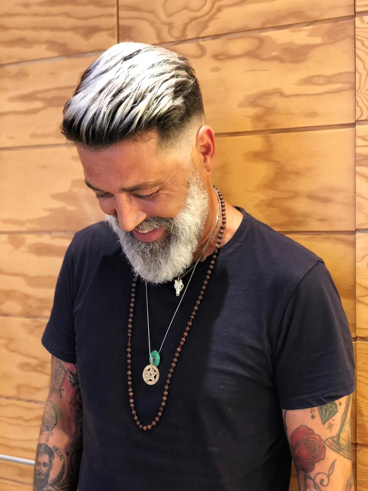

Inicio
Personal
Reserva
Contactanos
Nombre:
Daniel Alejandro
Apellido:
Mariscal Calle
Edad:
35 años
Especialidad:
Corte de todo tipo
Corte y delineado de barba
Tinte de cabello
Mascarilla
Tratamiento de cabello
Tratamiento capilar
Nombre:
Raul
Apellido:
Zarate Rendon
Edad:
22 años
Especialidad:
Corte de todo tipo
Corte y delineado de barba
Tinte de barba
Nombre:
Rodrigo
Apellido:
Casemiro
Edad:
27 años
Especialidad:
Corte de todo tipo
Corte y delineado de barba
Tinte de cabello
Mascarilla

Nombre:
Alberto Carlos
Apellido:
Ugarte Ruiz
Edad:
25 años
Especialidad:
Corte de todo tipo
Corte y delineado de barba
Tinte de barba